Portfolio


portfolio
Trump Game
game created using scratch.

Python Project
python program following a flow chart.

Android Game
android game created on MIT app inventor. The user controls a ball by tilting their device and tries
to
navigate through a maze. to run the program, click on the image to download the MIT app inventor project.
once open in app inventor, generate the barcode that
can be scanned on you android device to get the app.
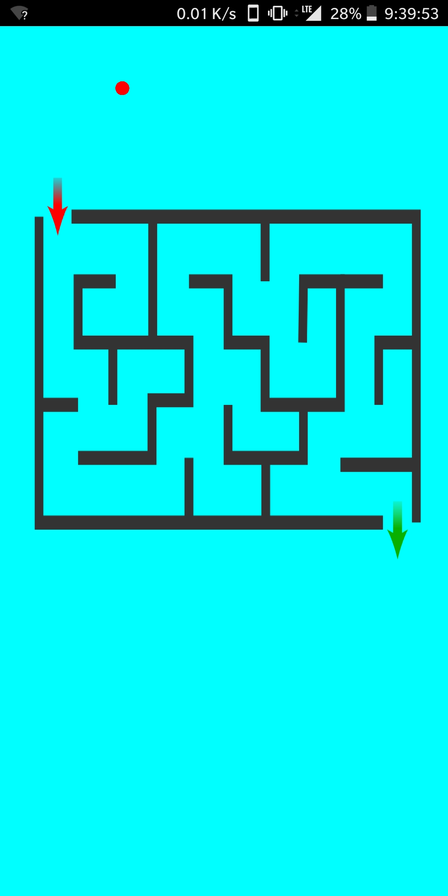
Photo Editing in python3
For this project I used pyhon to edit a photo with 2 chunks of code to create red and blue highlights.
 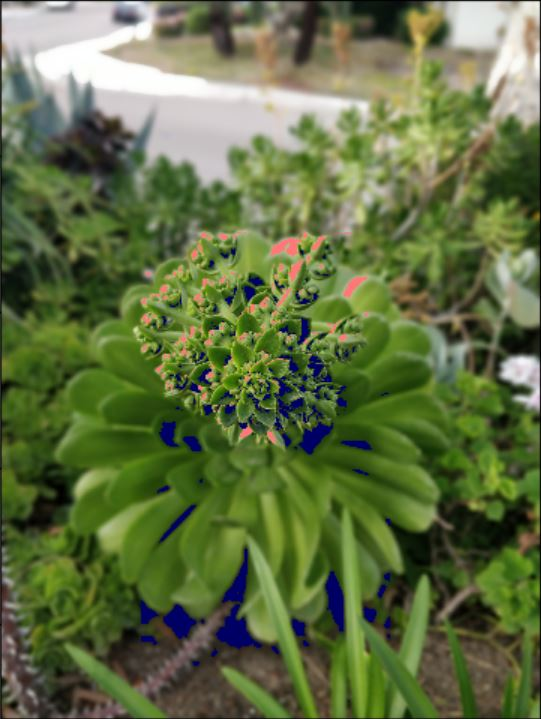
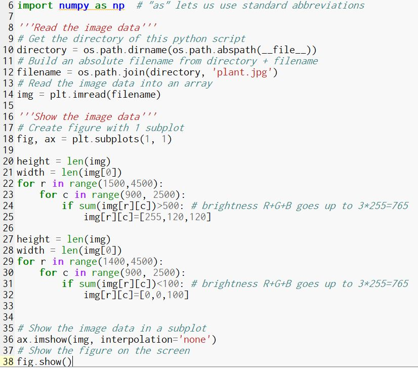
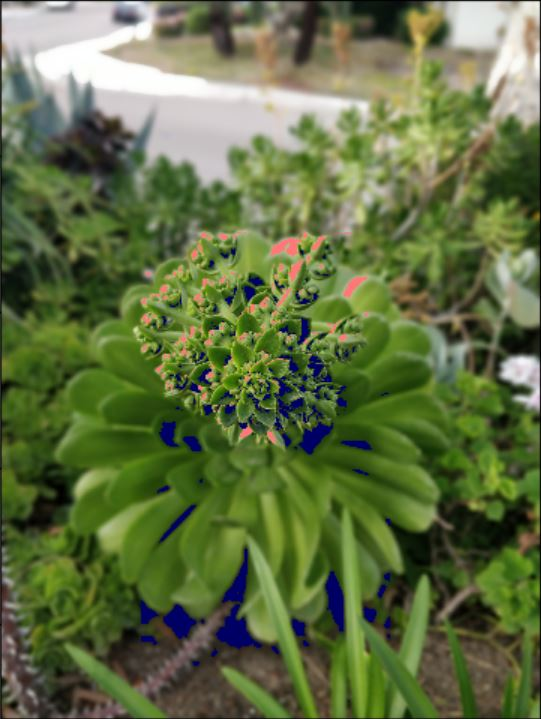
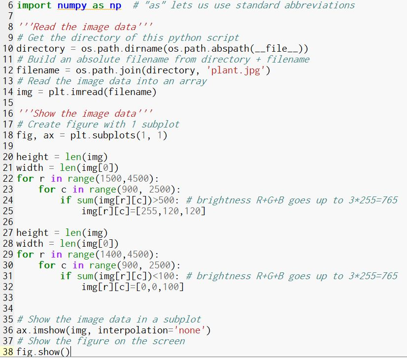
gui python3
For this project I used pyhon to create a simple gui.
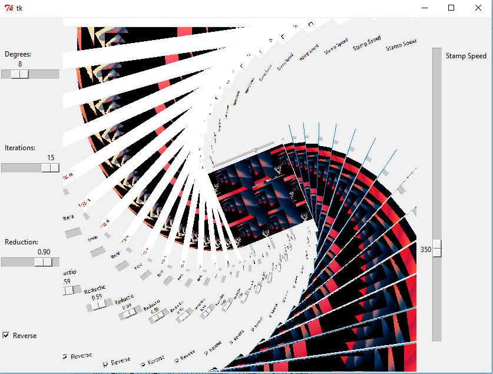
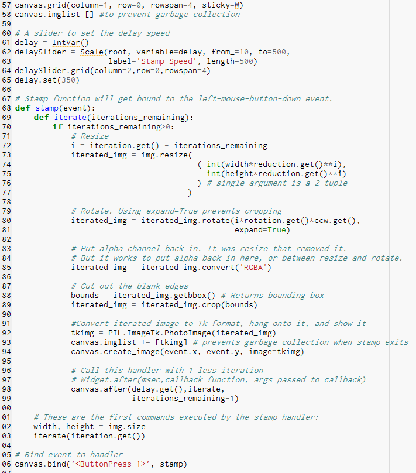
derivaive calculator in python 3
This code lets the user calculate the instantanious derivative at one point or
average derivative on an interval with accuracy to the seventh decimal.
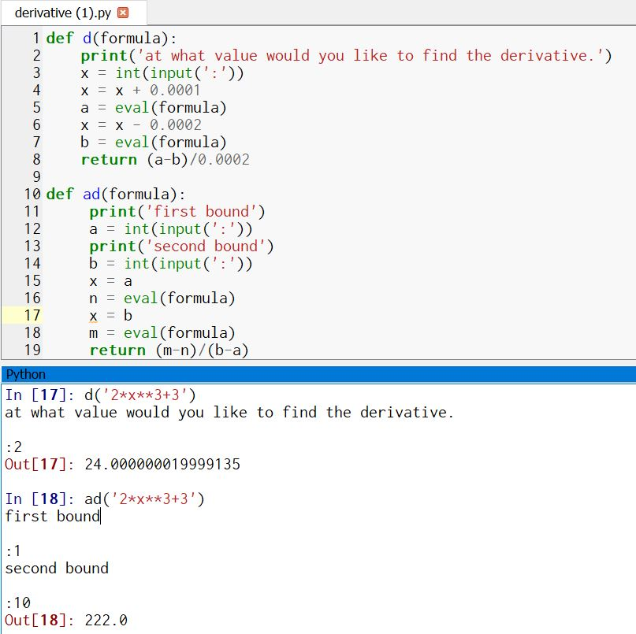
Answering a Question by Displaying data On Python
This Code displays 2 graphs using 1 spreadsheet of data. The question it answeres is:
How has Water Consumption changed compared to Population in NY?
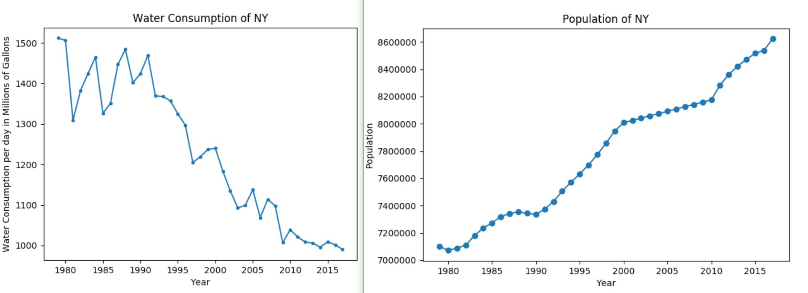
Simulation on NetLogo
For this project, I took an existing simulation and modifeid it to simulate soemthing else.
I turned a simulation of a virus in which infected people had a chance of dying to a simulation
that simulates the spread of a non lethal virus like a common cold. So the modified simulation
shows the spread of the virus without changing the population
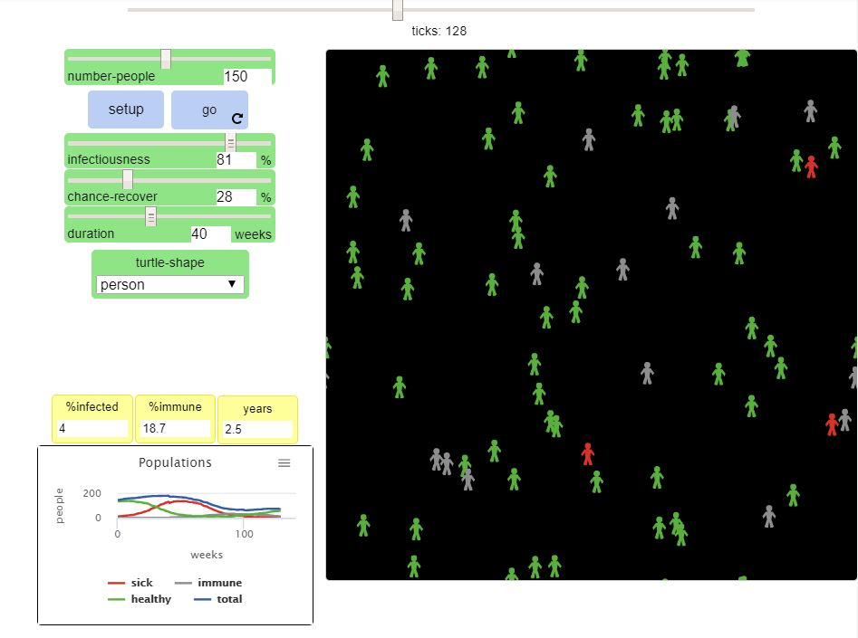
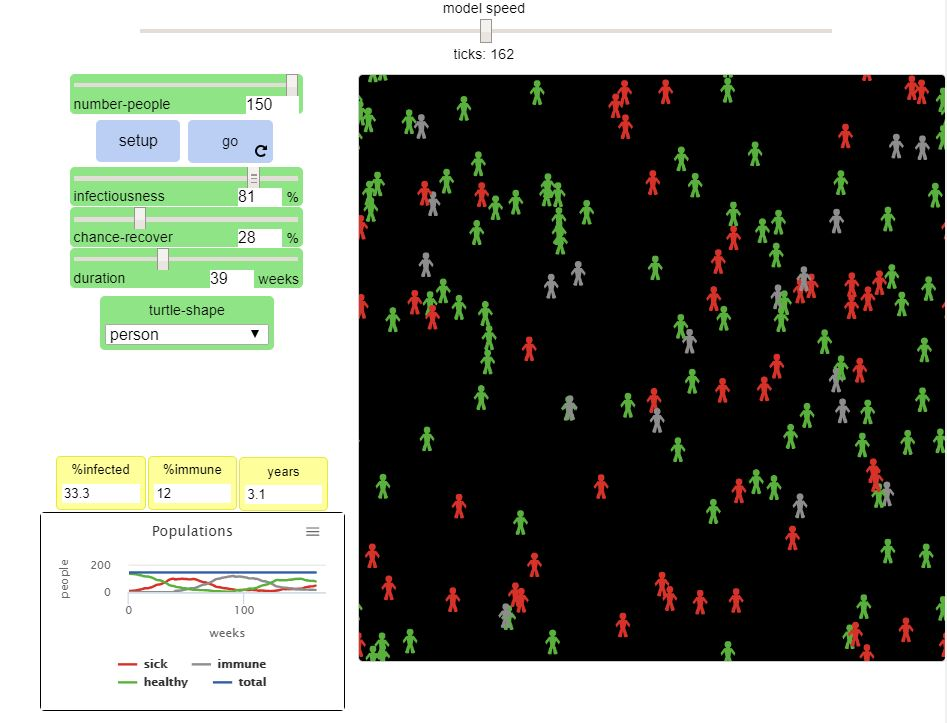